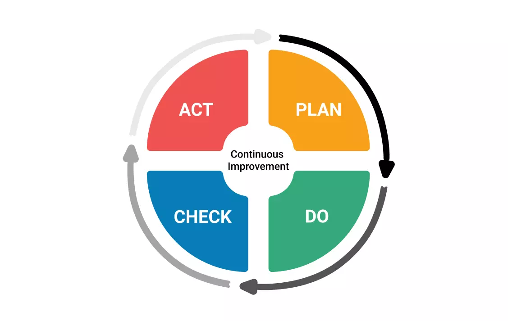

En este video, sigo la historia de Alex Rogo, gerente de una planta de producción al borde de la quiebra. La corporación le ha dado un ultimátum: tiene 90 días para dar un giro total a la situación o la fábrica cerrará definitivamente, lo que lo llena de desesperación. Con la presión al máximo y poco tiempo, Alex debe cuestionar todo lo que cree saber sobre la gestión para salvar el sustento de cientos de empleados. Su viaje de descubrimiento lo llevará a replantearse los fundamentos mismos de la eficiencia y la rentabilidad empresariales.
Lo más fascinante es cómo Alex, con la ayuda de su antiguo mentor Jonah, aprende a ver los "cuellos de botella" o restricciones de su sistema. En lugar de centrarse en la eficiencia individual de cada máquina, descubre que debe optimizar el flujo de toda la planta en torno a esas limitaciones. Me identifiqué con su lucha por coordinar las complejas operaciones y equilibrar los inventarios, logrando al final no solo salvar la fábrica sino también mejorar drásticamente su rendimiento global.
La mejora continua es una filosofía empresarial y una práctica sistemática que busca el perfeccionamiento constante y progresivo de todos los procesos de una organización. Se basa en la idea de que siempre hay espacio para la optimización, y que pequeños y constantes cambios positivos pueden llevar a mejoras significativas a largo plazo en la calidad, la eficiencia y la productividad.
Los pasos clave presentados en el video, derivados de la Teoría de Restricciones, son:

El problema principal que Alex Rogo enfrentaba al inicio de "La Meta" era que, a pesar de tener máquinas modernas y un personal ocupado, la planta no cumplía con los pedidos de los clientes. Los plazos de entrega se retrasaban constantemente y el nivel de servicio era pésimo. Esto se debía a que los inventarios de producto en proceso se acumulaban excesivamente en ciertos puntos clave (los cuellos de botella), mientras que otras áreas estaban inactivas, lo que estrangulaba el flujo de producción general.